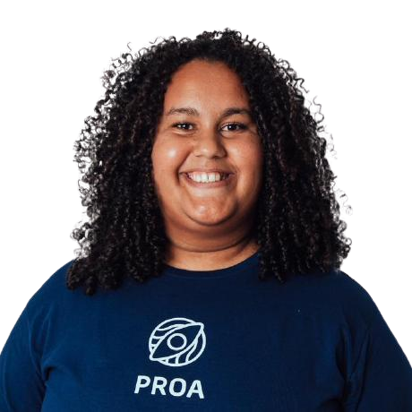
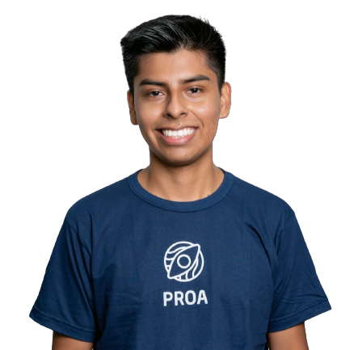

Currículo Online
-

Akyssa Eduarda da Silva
Entusiasta da tecnologia e apaixonada pelo seu potencial de transformação na sociedade, sou desenvolvedora front-end e estou cursando Análise e Desenvolvimento de Sistemas na UniAmérica. Busco minha primeira oportunidade de trabalho para aplicar os meus conhecimentos e evoluir como profissional.
-
Alanis Cristina Ribeiro Silva
Atualmente, cursando Desenvolvimento Web Java no Instituto PROA. Sou uma estudante de programação apaixonada por tecnologia e estou constantemente buscando oportunidades para aplicar meus conhecimentos teóricos na área.
-

Alinny Ribeiro da Cunha
Estudante em Desenvolvimento Web Java pelo Instituto PROA, graduando em Desenvolvimento de Software Multiplataformas pela FATEC e técnica em Desenvolvimento de Sistemas pela Etec.
-

Darwin Giovani Rodriguez Jarandilla
Atualmente estou estudando Desenvolvimento Web Java no Proa. Cursei Etec e estou em busca de aprimorar meus conhecimentos na área da tecnologia . A tecnologia em si conhecei no ano 2020 onde pude ver como realmente funciona tanto nas funcionalidades e teóricas. Busco minha primeira oportunidade na área de trabalho para por em práticas meus conhecimentos.
-

Diogo da Silva Almeida
Estudante em Desenvolvimento Web Full Stack, com projetos na área, atualmente estou realizando o projeto Cabelleza com desenvolvedor Back-End, atuando com MySQL, Java e Spring Boot